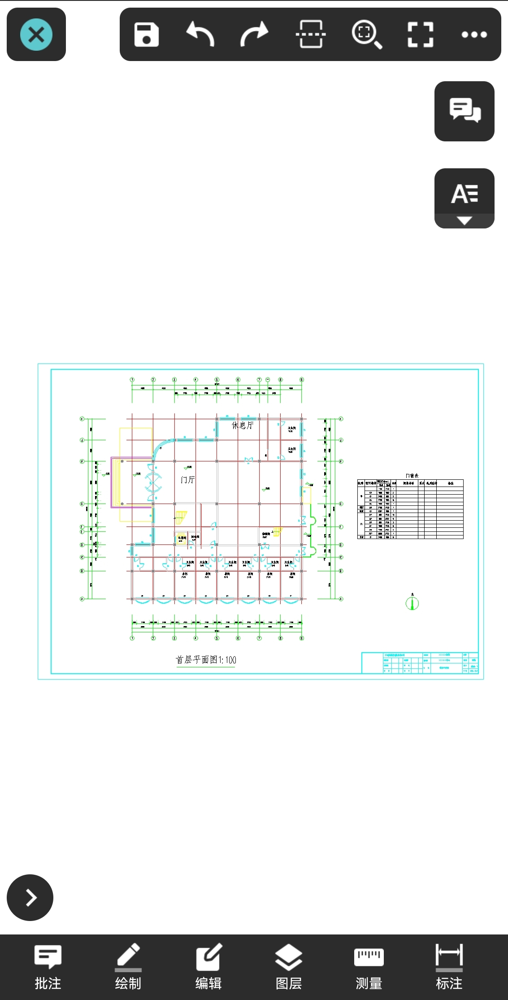

顶部功能：
返回：退出当前图纸。
保存：保存或另存当前图纸。
撤销：取消上一步操作。
重做：重做上一步操作。
多图查看：支持同时打开并查看两张图纸，上下对比查看。
全图：显示全图。
全屏：显示全屏。
更多：点击可选择看图模式，文件信息，导出，帮助，下载批注资源，隐藏批注，重生成，和设置。
侧边功能：
共享聊图：进入共享聊图。可实现多人远程共看一张图纸，一人对图纸的操作在其他参与人的终端上可实时同步显示。同时可一边看或操作图纸，一边收发消息。
常用词：支持快速添加常用文字到当前图纸。
底部功能：
快捷命令：展示最近使用的命令图标，点击快捷命可快速启动该命令，等同于点击菜单栏中的该命令。快捷命令默认为显示，可在“设置”中关闭。长按快捷命令上的命令图标可以将其固定在右侧显示，变成常驻命令。在常驻命令上长按，也可取消常驻。
批注：包含手绘线，箭头，文字，云线，音频，图片，视频，引线，直线，矩形，椭圆批注功能，并支持基于批注文字自动编号。
绘图：显示十种可绘制对象图标：多段线，单段线，文字，圆，圆弧，矩形，椭圆，手绘线，智能笔，注释，云线，和定数等分。
图层：包括新建图层，图层列表，关闭图层，关闭其他，上一图层，全部打开，和置为当前。
测量：包括测长度，连续测，测面积，测立面，测坐标，测弧长，测实体，测角度，设比例， 看结果，结果统计，和精度。
标注：包括对齐标注，线性标注，角度标注，半径标注，直径标注，弧长标注，三点圆弧。
颜色：可改变画笔的颜色。
工具：提供文字查找，文字递增，标坐标，插入图块，块统计，和书签。
布局：切换任意模型或布局空间。
视觉样式：支持二维和三维视觉样式切换。